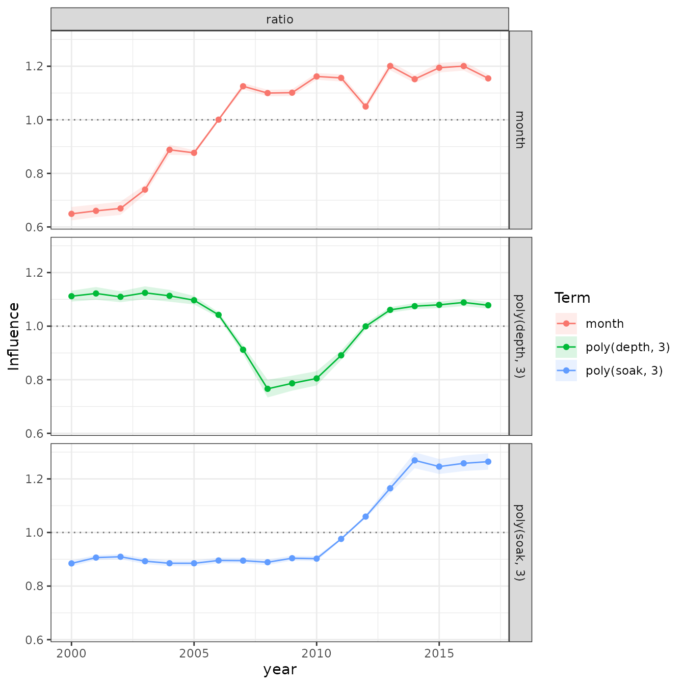
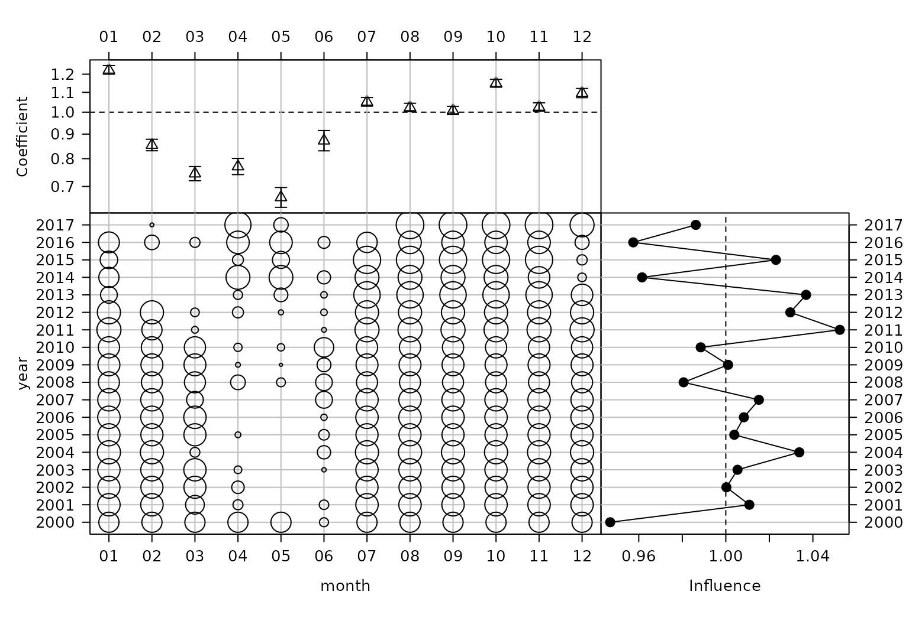
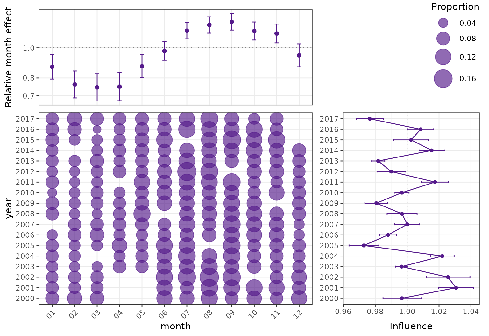
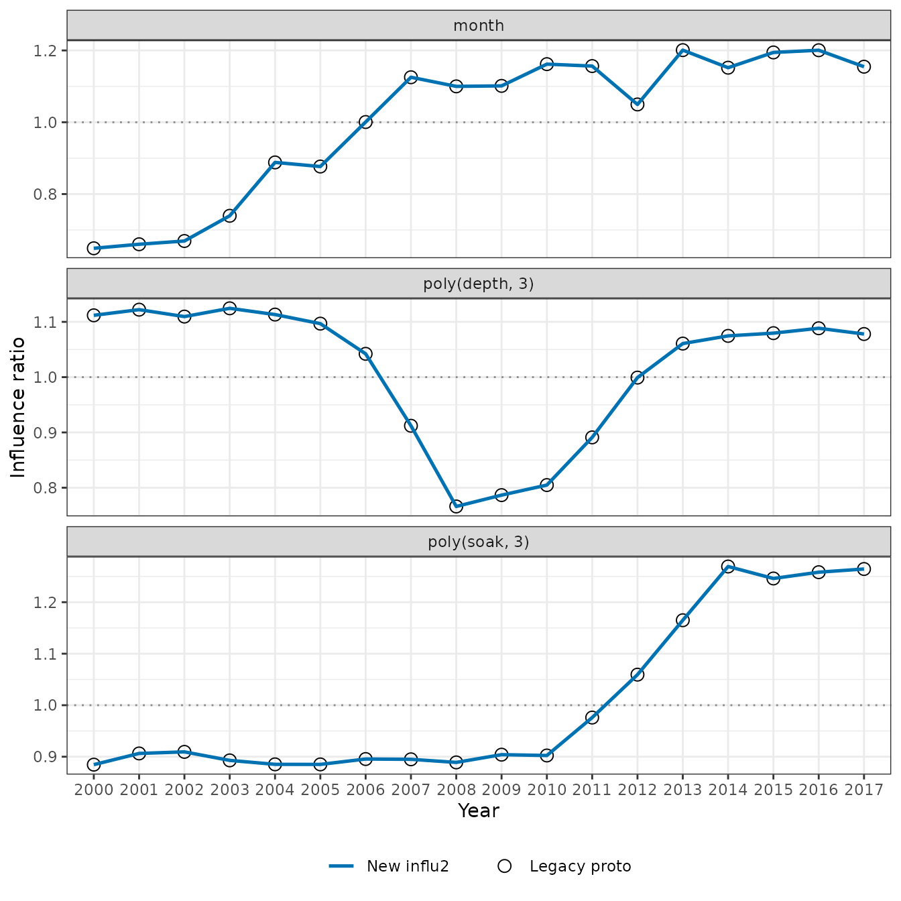

Purpose
The original influ code developed by Nokome Bentley used
the proto object system and GLMs (Bentley et al. 2012). That
implementation is retained in influ2 as a frozen validation
artefact, not as part of the package API. This vignette runs the old
code explicitly and compares it with the model-neutral S3 engine.
The comparison uses the same realistic lobsters_per_pot
example as the main vignette. A smaller frozen
fixture remains in the test suite for fast regression testing.
Fit the common model
library(influ2)
data(lobsters_per_pot)
bentley_glm <- glm(
lobsters ~ year + month + poly(depth, 3) + poly(soak, 3),
family = poisson(link = "log"),
data = lobsters_per_pot
)
new_diagnostic <- influ(bentley_glm, focus = "year")The legacy source remains outside the namespace under
inst/legacy. It is loaded into an isolated environment only
for this comparison.
legacy_available <- requireNamespace("proto", quietly = TRUE)
if (legacy_available) {
legacy_environment <- new.env(parent = globalenv())
legacy_environment$proto <- proto::proto
sys.source(
system.file("legacy", "influ-proto.R", package = "influ2"),
envir = legacy_environment
)
legacy_diagnostic <- legacy_environment$Influence$new(
model = bentley_glm,
data = lobsters_per_pot,
response = "lobsters",
focus = "year"
)
legacy_diagnostic$calc()
# The original code predates R 4.0 and assumes that data.frame() converts
# text to factors. Restore that historical plotting assumption here without
# modifying the frozen implementation.
legacy_diagnostic$influences$level <- factor(
legacy_diagnostic$influences$level,
levels = legacy_diagnostic$influences$level
)
}
legacy_available
#> [1] TRUEInfluence plots
The left-hand figure is produced by the original proto
method. The right-hand figure is produced from the new
influ_diag. Both show monthly, depth, and soak-time
influence as ratios centred on one across 18 years.
legacy_diagnostic$influPlot()
plot(
new_diagnostic,
type = "influence",
term = c("month", "poly(depth, 3)", "poly(soak, 3)"),
scale = "ratio"
) +
facet_grid(term ~ scale) +
labs(title = "New influ2")
Influence plots for the lobster example from the original Bentley proto implementation (left) and the new influ2 engine (right).
CDI plots
The complete coefficient-distribution-influence display combines the fitted effect, the distribution of observations, and the resulting influence. Both figures below use month as the model term and year as the focus.
Both top-left panels now show the same relative monthly effects: log-scale term contributions are centred on the observed monthly distribution, then exponentiated. The reference is one on a logarithmic axis. This removes the arbitrary choice of month 1 as the zero coefficient; a relative effect of 1.2 means a 20% higher monthly contribution to expected catch than the reference. The legacy label “Coefficient” and the new label “Relative month effect” describe the same fitted quantity in this example.
The interval widths deliberately differ. The original plot uses plus or minus one standard error on the centred log scale, followed by exponentiation. The new plot uses approximate 95% confidence intervals, including uncertainty in the estimated centre and its covariance with each month’s effect. Its annual influence panel also includes uncertainty intervals.
legacy_diagnostic$cdiPlot(term = "month")
plot(new_diagnostic, type = "cdi", term = "month")

CDI plots for month from Bentley proto (left) and influ2 (right). The centred relative-effect points agree; legacy top-panel bars use plus or minus one standard error, while influ2 uses 95% confidence intervals.
To inspect the earlier reference-coded display instead, use
coefficient_reference = "model". In this GLM that puts
month 1 at zero and shows the other months relative to it, on the log
scale. Alternatively, coefficient_scale = "link" keeps the
new centring but displays additive log effects. Neither option changes
the annual influence calculations.
Numerical agreement
First, compare the top-panel centred log effects and their standard errors. Exponentiating the estimates gives the matching relative-effect points shown above. Checking the standard errors separately verifies that the difference between the plotted intervals comes from their stated coverage.
legacy_coefficients <- aggregate(
legacy_diagnostic$preds[c("fit.month", "se.fit.month")],
list(level = legacy_diagnostic$preds$month),
mean
)
names(legacy_coefficients) <- c(
"level", "centred_estimate_legacy", "centred_std_error_legacy"
)
current_coefficients <- subset(
new_diagnostic$coefficients,
term == "month",
select = c(level, centred_estimate, centred_std_error)
)
coefficient_comparison <- merge(
legacy_coefficients, current_coefficients, by = "level"
)
coefficient_comparison$relative_effect <- exp(
coefficient_comparison$centred_estimate
)
coefficient_comparison
#> level centred_estimate_legacy centred_std_error_legacy centred_estimate
#> 1 01 -0.14004993 0.04649725 -0.14004993
#> 2 02 -0.27181758 0.05128402 -0.27181758
#> 3 03 -0.29337051 0.05182085 -0.29337051
#> 4 04 -0.28778981 0.05397717 -0.28778981
#> 5 05 -0.13601827 0.04396847 -0.13601827
#> 6 06 -0.02220567 0.03552861 -0.02220567
#> 7 07 0.12778911 0.03080286 0.12778911
#> 8 08 0.17036079 0.03076136 0.17036079
#> 9 09 0.19382951 0.03098455 0.19382951
#> 10 10 0.12568185 0.03422592 0.12568185
#> 11 11 0.10712741 0.03563925 0.10712741
#> 12 12 -0.05538157 0.04346794 -0.05538157
#> centred_std_error relative_effect
#> 1 0.04649725 0.8693148
#> 2 0.05128402 0.7619933
#> 3 0.05182085 0.7457458
#> 4 0.05397717 0.7499192
#> 5 0.04396847 0.8728267
#> 6 0.03552861 0.9780391
#> 7 0.03080286 1.1363133
#> 8 0.03076136 1.1857326
#> 9 0.03098455 1.2138893
#> 10 0.03422592 1.1339214
#> 11 0.03563925 1.1130761
#> 12 0.04346794 0.9461241
stopifnot(
max(abs(coefficient_comparison$centred_estimate_legacy -
coefficient_comparison$centred_estimate)) < 1e-8,
max(abs(coefficient_comparison$centred_std_error_legacy -
coefficient_comparison$centred_std_error)) < 1e-8
)The old and new engines are also compared directly on all 54
year-by-term contrasts in the lobster example. Routine
testthat tests retain both this realistic comparison and a
smaller frozen numerical fixture.
legacy <- reshape(
as.data.frame(legacy_diagnostic$influences),
direction = "long",
varying = names(legacy_diagnostic$influences)[-1],
v.names = "link_influence_legacy",
timevar = "term",
times = names(legacy_diagnostic$influences)[-1]
)
rownames(legacy) <- NULL
current <- subset(
influ_effects(new_diagnostic),
term != "year" & scale == "link",
select = c(level, term, estimate)
)
names(current)[names(current) == "estimate"] <- "link_influence_new"
comparison <- merge(
legacy[c("level", "term", "link_influence_legacy")],
current,
by = c("level", "term")
)
comparison$natural_influence_legacy <- exp(comparison$link_influence_legacy)
comparison$absolute_difference <- abs(
comparison$link_influence_legacy - comparison$link_influence_new
)
head(comparison)
#> level term link_influence_legacy link_influence_new
#> 1 2000 month -0.003223419 -0.003223419
#> 2 2000 poly(depth, 3) -0.062021221 -0.062021221
#> 3 2000 poly(soak, 3) -0.010853447 -0.010853447
#> 4 2001 month 0.030204085 0.030204085
#> 5 2001 poly(depth, 3) -0.070410691 -0.070410691
#> 6 2001 poly(soak, 3) -0.011494141 -0.011494141
#> natural_influence_legacy absolute_difference
#> 1 0.9967818 3.903128e-18
#> 2 0.9398629 6.938894e-18
#> 3 0.9892052 0.000000e+00
#> 4 1.0306649 6.938894e-18
#> 5 0.9320110 0.000000e+00
#> 6 0.9885717 1.734723e-18
max(comparison$absolute_difference)
#> [1] 1.387779e-17
stopifnot(max(comparison$absolute_difference) < 1e-8)The same validation covers the two scalar metrics from the original
implementation. overall summarises mean absolute influence,
while trend summarises the ordered change through the focus
levels.
legacy_metrics <- subset(
legacy_diagnostic$summary,
term != "intercept" & term != "year",
select = c(term, overall, trend)
)
new_metrics <- reshape(
influ_metrics(new_diagnostic)[c("term", "metric", "estimate")],
direction = "wide",
idvar = "term",
timevar = "metric"
)
names(new_metrics) <- sub("^estimate\\.", "", names(new_metrics))
metric_comparison <- merge(
legacy_metrics,
new_metrics,
by = "term",
suffixes = c("_legacy", "_new")
)
metric_comparison
#> term overall_legacy trend_legacy overall_new trend_new
#> 1 month 0.013690247 -0.0009107806 0.013690247 -0.0009107806
#> 2 poly(depth, 3) 0.025304894 0.0041030111 0.025304894 0.0041030111
#> 3 poly(soak, 3) 0.007202846 0.0014664819 0.007202846 0.0014664819
stopifnot(
max(abs(metric_comparison$overall_legacy - metric_comparison$overall_new)) < 1e-8,
max(abs(metric_comparison$trend_legacy - metric_comparison$trend_new)) < 1e-8
)The final overlay makes exact agreement visually apparent: legacy results are points, and new results are lines.
ggplot(comparison, aes(x = level, group = term)) +
geom_hline(yintercept = 1, linetype = 3, colour = "grey55") +
geom_point(
aes(y = natural_influence_legacy, shape = "Legacy proto"),
size = 3
) +
geom_line(
aes(y = exp(link_influence_new), colour = "New influ2"),
linewidth = 0.9
) +
facet_wrap(~term, ncol = 1, scales = "free_y") +
scale_colour_manual(values = c("New influ2" = "#0072B2")) +
scale_shape_manual(values = c("Legacy proto" = 21)) +
labs(
x = "Year",
y = "Influence ratio",
colour = NULL,
shape = NULL
) +
theme_bw() +
theme(legend.position = "bottom")
Direct overlay of legacy Bentley influence values and new influ2 results for the lobster example.